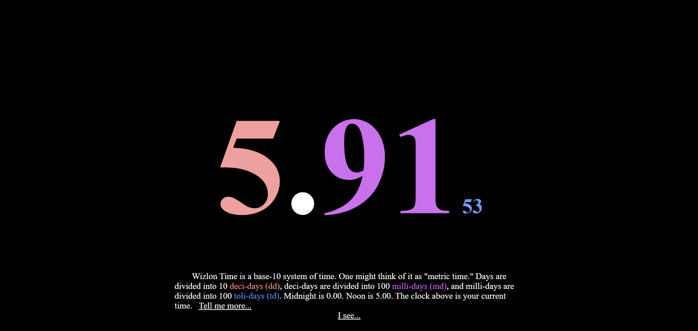

Wizlon Time
HTML, CSS, JavaScript | Web | github.com/MichaelPineapple/WizlonTimeJava | Android | github.com/MichaelPineapple/WizlonTime-Android
Wizlon Time is a base-10 system of time. One might think of it as "metric time." Days are divided into 10 deci-days (dd), deci-days are divided into 100 milli-days (md), and milli-days are divided into 100 toli-days (td). Midnight is 0.00. Noon is 5.00.
Website: meowcle.net/WizlonTime
APK: https://github.com/MichaelPineapple/WizlonTime-Android/releases/WizlonTime.apk
